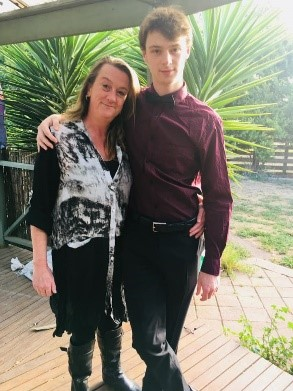
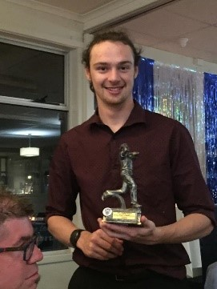

- 
- 
-

I suppose you can see my combined heritage with my love of cricket and being simultaneously amazing and atrocious at the game. One minute you go three seasons straight of being the leading wicket taker at the club, and the next you can barely run let alone bowl. I have had serious issues with the tendons in my knees, shin splints and ankles for the past couple years and have become aware of my limitations and count the times where I am able to move like I used to as a blessing.
Cricket is not the only sport I have played however, I have also had my fair share in Tennis, AFL, Badminton, T-ball, Athletics, Swimming and Dota 2. Now I know Dota 2 is an e-sport and might not classify, and I know I never played it professionally or attended serious tournaments, but it was a load of fun to play with my friends from high school. After putting in over 3.2 thousand hours, I finally decided it was time to retire from the game.
I do still enjoy playing some games, even after retiring most of them. Minecraft is a huge example of that, and I think is getting close to as much playtime if not more with the countless weeks of grinding I have put in over the past couple years. I picked it up when it was gaining popularity again and used it as an excuse to try and start my hobby as a Twitch streamer. I would still be doing my usual streams and enjoying the communities I built, manage, and grew but when COVID hit, my internet became too slow and unstable to sustain that lifestyle.
Hanging out on Twitch is how I met my girlfriend. We have been together for 10 months now, completely long distance as she is in England. I have only ever been to England twice myself, both times I was too young to remember. Once when I was a baby to introduce me as the eldest of my generation on my mothers side to her family, and the other a couple years later with my sister for my aunts wedding. I plan on going up there for a month or two when international travel opens again to stay with my grandfather, catch up with my mothers family, see the sights and hang out with my girlfriend.
I seem to have gone on a bit of a tangent, so I will bring it back with my educational background. I went to the local kindergarten and public school, both of which I was outcast and looked down upon. But where I was lacking in social skills and experience, I made up for with my knack for mathematics, technology and problem solving. It was also in grade 2 I picked up the guitar and joined a choir, later to take lead vocals of the national anthem at assemblies and transfer into the school rock band.
Highschool was the turning point in my life. I managed to get into Kardinia International College and from there began to find a social life and enjoy life. I competed in mathematics, problem solving, language and programming competitions and managed to get a distinction and even high distinction in most of them. It was also the point where I decided to pursue a career in Engineering so was forced to drop I.T. for Upper Level and Specialist Mathematics, Physics and Systems Engineering.